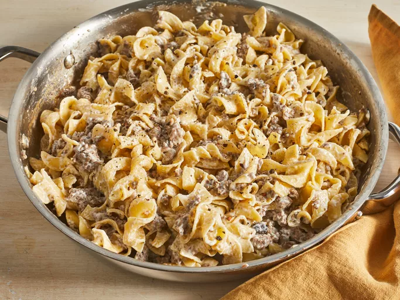

strogonoff de carne

Descrição
Esta receita rica e cremosa de estrogonofe de carne é feita com carne moída e servida com macarrão de ovo. É super simples de preparar e pronto para servir em menos de 30 minutos, sendo uma ótima opção para noites movimentadas da semana. Decore com salsa fresca picada.
O estrogonofe de carne tradicional é feito com bife, molho à base de roux e cogumelos salteados. Mas, como o título sugere, esta receita é simplificada. Baseia-se em ingredientes de atalho, como carne moída e sopa de creme de cogumelos em lata, para reduzir o tempo de cozimento e reduzir etapas extras.
Ingredientes
- 1 pacote (8 onças) de macarrão de ovo.
- 1 quilo de carne moída.
- 1 lata (10,5 onças) de creme condensado sem gordura de sopa de cogumelos.
- 1 colher de sopa de alho em pó ou a gosto.
- ½ xícara de creme de leite.
- sal e pimenta preta moída a gosto.
Etapas
- Reúna todos os ingredientes.
- Refogue a carne moída em uma frigideira grande em fogo médio até dourar e ficar quebradiça; 5 a 10 minutos.
- Enquanto isso, encha uma panela grande com água levemente salgada e deixe ferver rapidamente. Cozinhe o macarrão com ovo em fervura até ficar macio, mas firme ao morder, 7 a 9 minutos. Escorra e reserve.
- Escorra e descarte a gordura da carne cozida. Misture a sopa condensada e o alho em pó à carne. Cozinhe por 10 minutos, mexendo ocasionalmente.
- Retire a carne do fogo. Adicione o macarrão de ovo e misture bem. Junte o creme de leite e tempere com sal e pimenta.